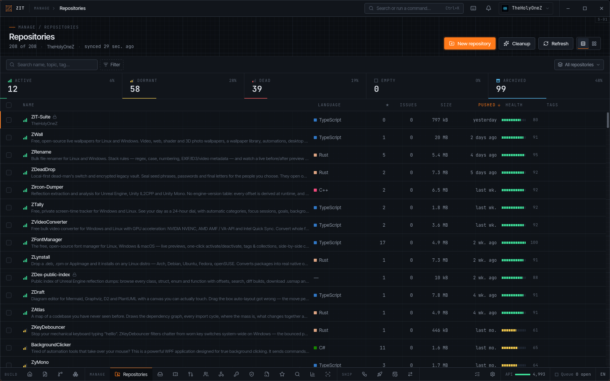
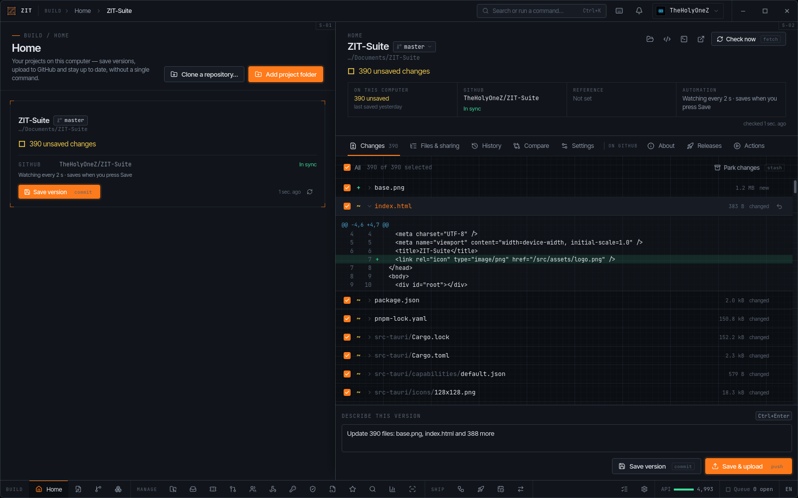
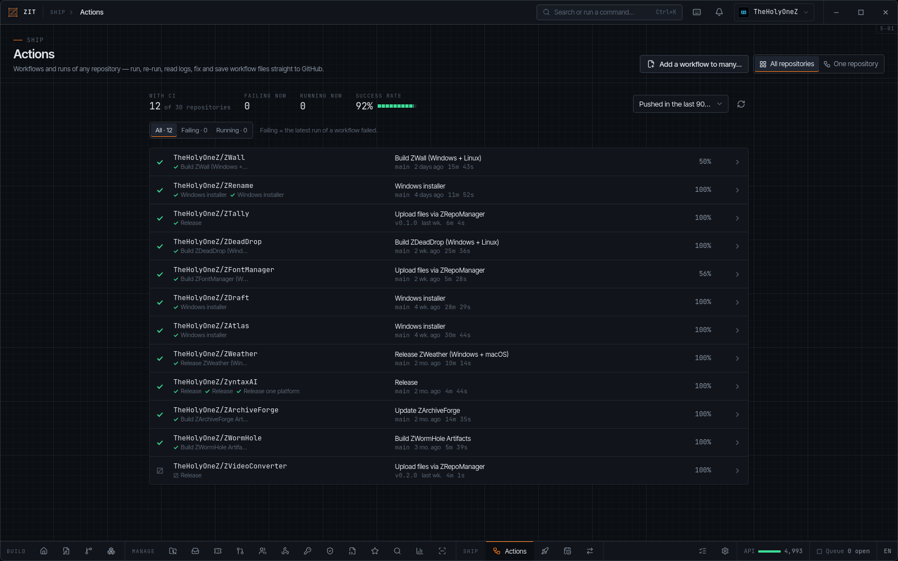
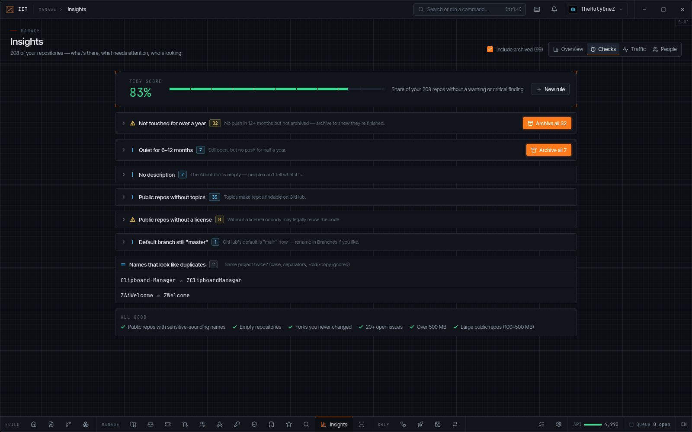

Bulk everything
Archive, delete, change visibility, rename, transfer, label, protect branches, add topics or set secrets on many repositories at once — always through a queue with a real dry run.
ZIT-Suite is a free, open-source GitHub desktop app for Linux and Windows. Manage hundreds of repositories at once, run bulk actions with a real dry run, triage issues and pull requests across all of them, watch CI, ship releases and work with local projects through built-in Git — no terminal needed.

Archiving dead projects, finding every failing workflow, rotating a secret everywhere, adding missing licenses, cleaning up merged branches, answering issues spread over a dozen repos — ZIT-Suite turns afternoons of clicking into a few checked boxes.
Archive, delete, change visibility, rename, transfer, label, protect branches, add topics or set secrets on many repositories at once — always through a queue with a real dry run.
One inbox for issues, one for pull requests, one CI board, one release board, one security overview — across every repository you own.
Home turns any folder into a project: save versions, upload, get latest, branches, diffs, park changes and undo — with libgit2 built in.
Your token lives in the OS keychain, destructive actions need typed confirmation and a grace countdown, pushes are never forced, secrets are sealed on-device.
Health scores, tidy checks with one-click fixes, custom rules, traffic history beyond GitHub's 14 days, contributor stats and a full code audit.
A distinctive blueprint design in light and dark, accent colors, a command palette, keyboard-first navigation, English and German.
Pick a folder and ZIT-Suite does the Git. Plain words everywhere, with the real Git term shown small next to each action so you learn as you go.
.gitignore, new private repo, first upload
The CI board puts failing workflows first, with success rates and live runs. The release board shows what's released where — and how many commits are waiting to ship.

A tidy score for your whole portfolio, rules for stale repos, missing licenses, topics or descriptions, near-duplicate names and your own custom rules — every finding with a bulk fix through the queue.

Organized in three pillars, BUILD, MANAGE and SHIP. Every tab is a self-contained module, and everything bulk or destructive goes through the queue.
Write, organize and keep code in sync.
git init, a suggested .gitignore, a new private GitHub repo, first version and upload.gitignore editor.gitignore), image and Markdown previewpackage.json, Cargo.toml, requirements.txt, pyproject.toml, go.mod, pom.xml — anywhere in a monorepoKeep hundreds of repositories in order.
.gitignore, license, template), exportstree-style file tree with sizes and lines (export .txt / .json)Build, release and automate.
workflow_dispatch with a form · workflow editor with templatesThe engine underneath.
Ctrl+K), shortcut sheet (?), Ctrl+1…9, J/KEvery image below is a screenshot of ZIT-Suite v0.1.0 running against a real GitHub account. Click to enlarge, use the arrow keys to browse.
Bulk tools are only useful if you can trust them. ZIT-Suite shows you exactly what will happen before anything happens.
Windows Credential Manager, Secret Service or KWallet. Never in a file, never exposed to the interface.
Every repository is checked first: ready, no change or blocked — and why.
Actions wait in a persistent queue with a countdown. Pause, cancel or skip any time — even after a restart.
Deleting or transferring repositories requires typing the confirmation out.
Home never force-pushes. Conflicts abort untouched unless you choose a side.
Actions secrets are encrypted locally with each repository's public key and never written to disk.
ZIT-Suite talks to GitHub and nothing else. No analytics, no account, no tracking.
Every line is public under GPL-3.0 — read it, build it yourself, improve it.
Free and open source. Pick the installer for your operating system — the one that fits your computer is highlighted.
This website is the only place where precompiled ZIT-Suite installers are published. The GitHub repository contains the source code only — there are no prebuilt files in GitHub Releases. You're welcome to build it yourself from source; installers offered anywhere else are not official.
Windows 10 & 11 · 64-bit · installer
Debian, Ubuntu, Linux Mint, Pop!_OS · x86-64
Fedora, openSUSE, RHEL, Nobara · x86-64
# run the installer, then start
# "ZIT-Suite" from the Start menu
ZIT-Suite_0.1.0_x64-setup.exe# install with dependencies
sudo apt install ./ZIT-Suite_0.1.0_amd64.deb# Fedora sudo dnf install ./ZIT-Suite-0.1.0-1.x86_64.rpm # openSUSE sudo zypper install ./ZIT-Suite-0.1.0-1.x86_64.rpm
Windows SmartScreen may warn about a new, not-yet-widely-downloaded app. Click More info → Run anyway. The installer is built from the public source code on GitHub — verify the checksum below if you like, or build it yourself.
Prefer to build it yourself? The full source is on GitHub — pnpm install && pnpm tauri build. Precompiled installers come only from this page. Checksums: SHA256SUMS.txt
Download the installer for your system above and run it.
On GitHub: Settings → Developer settings → Personal access tokens (classic) with the scopes below.
Paste the token — it goes straight into your OS keychain. Or use the OAuth device flow.
Your repositories load instantly. Press Ctrl+K to jump anywhere, ? for shortcuts.
repodelete_repoworkflowread:orgread:usernotificationsgistadmin:repo_hook
ZIT-Suite tells you exactly which features a missing scope affects — you can start with fewer and add more later.
A Rust core with a React interface, packaged with Tauri — a small, native app instead of a bundled browser.
GitHub REST + GraphQL client with pagination, ETag cache and rate-limit tracking, libgit2, OS keychain.
Strict TypeScript, TanStack Query, CodeMirror 6, Tailwind CSS 4 — typed bindings generated from Rust.
Every tab is a self-registering module. Palette, shortcuts and settings are derived from the registry.
Hundreds of unit tests, clippy with warnings as errors, CI on Linux and Windows.
Yes — free and open source under the GNU General Public License v3.0. No account, no subscription, no ads.
Precompiled installers (.exe, .deb, .rpm) are published only on this website, zsync.eu/zit-suite. The GitHub repository has the source code only — no prebuilt files. You can always build ZIT-Suite yourself from that source; installers from anywhere else are not official.
No. Git is built in (libgit2): cloning, committing, pushing, pulling, branches, stashes and merges work without a git executable.
Windows 10 and 11 (installer .exe) and 64-bit Linux — .deb for Debian, Ubuntu and Mint, .rpm for Fedora and openSUSE. macOS builds are possible from source but not officially tested yet.
In your operating system's keychain (Windows Credential Manager, Secret Service or KWallet on Linux). It stays in the Rust backend and is never written to a file.
Every destructive action goes through the queue: a dry run shows what happens per repository, deletes and transfers need typed confirmation, and a grace countdown lets you cancel.
Lists are cached with ETags (unchanged answers don't count), GraphQL replaces hundreds of requests where possible, and your remaining budget is always visible in the status bar.
Yes. Switch between your account and your organizations; repositories, issues, pull requests and more follow the selected scope.
English and German, switchable with one click. Languages are plain JSON files, so adding more is easy.
ZIT-Suite is the ground-up rebuild of ZRepoManager: every old feature is back, stubbed features now really work, and it adds Home, Insights, Security, Actions, Releases, Search, Inbox, Code Audit and more.
Download ZIT-Suite for free and manage every repository you own from one place.